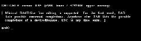
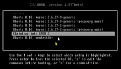
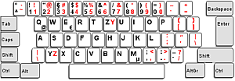

GRUB-Shell
Hinweis:
Die GRUB-Konsole – richtiger: GRUB-CLI (Command Line Interface) – ist ein wichtiges Modul, um den Rechner starten zu können. Das GRUB-Auswahlmenü wird z.B. in dieser Konsole dargestellt und die entsprechenden Steuerbefehle werden aus der menu.lst eingelesen und ausgewertet. Man kann mittels dieser Konsole hinterlegte Befehle temporär bearbeiten (editieren) und damit ein nicht startbares System zum Hochfahren bewegen.
Hinweis:
Der Bootloader GRUB agiert normalerweise losgelöst vom eigentlichen Betriebssystem. Daraus erklären sich die eigenen, GRUB-internen Bezeichnungen der gefundenen Datenträger und Partitionen: GRUB bezeichnet den ersten gefundenen Datenträger mit dem Namen (hd0) während der Linux-Kernel eigene Suchalgorithmen benutzt und Datenträger nach dem Schema /dev/sdX bezeichnet.
Konsole-Modi¶
 Es gibt verschiedene Möglichkeiten, um auf eine GRUB-Konsole zu gelangen:
Durch GRUB selbst (vor oder nach dem Auswahlmenü), weil GRUB seine Daten nicht findet bzw. diese fehlerhaft sind und Hilfe anfordert:
Error: no such disk grub rescue>
Mögliche Ursache: /boot kann nicht adressiert oder gefunden werden oder ein älteres BIOS (137GB-Limit) verursacht den Fehler:
Error: No such device: xxxxxxxx-xxxx-xxxx-xxxx-xxxxxxxxxxxx Press any key to continue.. grub> _
Mögliche Ursache: fehlerhafter Eintrag in der Steuerdatei. Temporär kann auch
/dev/sdXYverwendet werden. Durch Eingabe von C im Auswahlmenü, um in den Konsole-Modus zu schalten, das System zu untersuchen etc.
Durch Eingabe von E im Auswahlmenü, um die entsprechende Steuerdatei (grub.cfg oder menu.lst) temporär zu bearbeiten.
Expertenmodus: Durch Aufruf eines GRUB-Emulators in einem Terminal, wobei die Darstellung der Ergebnisse von Punkt 1–3 abweichen können.
Hilfreiche Befehle¶
help- Liste aller verfügbaren Befehle.help <Befehl>liefert weitergehende Informationen/die Syntax zum entsprechenden Befehl.Tab ⇆ -Vervollständigung - Bei Teileingabe eines Befehls und anschließendem Tab ⇆ werden Auswahlmöglichkeiten angezeigt, z.B. zu
ls:grub> ls (hd<Tab> Possible disks are: hd0 hd1 grub> ls (hd
ls- Listen von Datenträger, Partitionen und Verzeichnisinhalten.ls ls -la /dev/disk/by-id ls -la /dev/disk/by-uuid ls -la /dev/disk/by-label
In den Beispielen werden Informationen über bekannte Platten, UUIDs und Labels abgefragt.
set- GRUB kennt Variablen. Um diese mit Werten zu füllen, wird der Befehlset <Variable=Inhalt>benutzt, z.B.:set root=(hd0,1)
setzt den ersten Datenträger sowie dessen erste Partition als Root, alle weiteren Befehle ohne
(hdx,y)beziehen sich auf diesesroot.pager-set pager=1
bewirkt ein zeilenweises Anzeigen (analog 'less'), mit ⏎ bestätigen. Sinnvoll z.B. bei
cat. Anschließend wieder mitset pager=0zurücksetzen!cat- Inhaltsanzeige von einfachen Textdateien:cat /boot/grub/grub.cfg cat /etc/lsb-release cat /boot/grub/device.map
Auch andere Textdateien sind zulässig, z.B. /meine_Hilfe.txt.
search- Suchen nach z.B. der grub.cfg:search -f /grub/grub.cfg
quitoder Esc - Die Konsole verlassenhalt- Den Rechner ausschaltenbootbzw.reboot- Booten mit evtl. Veränderungen bzw. Neustart des Systems
Sofern weitere Steuerkommandos, Optionen oder Tasten zur Verfügung stehen, z.B. ↑ + ↓ , werden diese im unteren Bildschirmbereich angezeigt.
Systemstart¶
In den Beispielen werden die Bezeichnungen /dev/sdXY und (hdX,Y) benutzt. Diese müssen auf die eigenen Gegebenheiten abgestellt werden. GRUB Legacy beginnt bei (hdX,Y) immer bei 0 zu zählen (auch bei Partitionen).
Start mit Symlinks:
set root=(hdX,Y) linux vmlinuz root=/dev/sdXY ro quiet splash initrd initrd.img boot
vmlinuzundinitrd.imgsind Symlinks im Verzeichnis /, die auf den aktuellen Kernel bzw. die Ramdisk verweisen. Diese eigentlichen Dateien sind unter /boot/ z.B. als vmlinuz-x.x.xx-xx-generic bzw. initrd.img-x.x.xx-xx-generic abgelegt.Start mit Kernelangabe:
set root=(hdX,Y) linux /boot/vmlinuz-2.6.31-14-generic root=/dev/sdXY ro quiet splash initrd /boot/initrd.img-2.6.31-14-generic boot
Hierbei wurde gezielt der Kernel 2.6.31-14-generic aus /boot auf /dev/sdXY ausgewählt.
Start mit Chainloader:
set root=(hdX,Y) chainloader +1 boot
Aufruf eines weiteren Bootloaders,
chainloader +1verweist dabei auf den 1. Sektor von (hdX,Y), wo der andere Bootloader liegen sollte.Start mit anderer Steuerdatei:
set root=(hd0,1) configfile /boot/grub/menu.lst
Einlesen und Auswerten einer eigenen Steuerdatei (.lst) oder einer Sicherung. Der Befehl
bootentfällt, da Bestandteil der Konfigurationsdatei.
Editieren der Steuerdatei¶

Hinweis:
Da beim Start des Bootloaders noch kein deutsches Tastaturlayout vorhanden ist, ergeben sich Abweichungen, die in nebenstehender Abbildung rot hervorgehoben wurden.
Mit
E im GRUB-Auswahlmenü gelangt man in den Edit-Modus. Hier kann die aktuell geladene Steuerdatei temporär bearbeitet werden. Dies kann sehr hilfreich sein, wenn man z.B. Bootoptionen oder sonstige Kernelmodifikationen ausprobieren möchte. Bei GRUB Legacy wird zur Kernelmanipulation die Zeile kernel bearbeitet, um die Veränderungen vorzunehmen.
Als Beispiel wird hier eine menu.lst von GRUB Legacy bearbeitet, die Fehler aufweist.
Um bei diesem Fehler fortfahren zu können, muss man eine beliebige Taste drücken, um das GRUB-Auswahlmenü zu erhalten.
Ubuntu, kernel 2.6.28-14-generic Ubuntu, linux 2.6.28-14-generic (recovery mode) Ubuntu, memtest86+ Chainload into GRUB 2
Mit ↑ + ↓ den Eintrag auswählen (Zeile wird markiert) und mit E zum Bearbeiten aktivieren. Am unteren Bildschirmrand wird man auf weitere Optionen und Tastenkombinationen hingewiesen, die zur Bearbeitung hilfreich sind.
Fehlerhaften Eintrag suchen ↑ + ↓
linux 2.6.28-14-generic (recovery mode)
, erneut mit E zum Bearbeiten auswählen.
Überschreiben des fehlerhaften
linuxmit der korrekten Bezeichnungkernelkernel
und den Vorgang mit ⏎ bestätigen.
Mit B den geänderten Eintrag starten.
Nach diesem Schema lassen sich alle Zeilen in einer Steuerdatei temporär bearbeiten.
Da diese Änderungen nur für den Startvorgang modifiziert wurden, müssen sie anschließend – sofern gewünscht – in der entsprechenden Steuerdatei /boot/grub/menu.lst mit einem Editor und Root-Rechten permanent gemacht werden. Einzelheiten sind den entsprechenden Artikeln zu entnehmen.
Befehlsübersicht¶
| Befehlsübersicht | |
| Befehl | Beschreibung |
blocklist | Ausgabe der Blocklist-Notation einer Datei: blocklist file, siehe auch hier  |
boot | Bootet das System oder den Chainloader, der vorher geladen wurde |
cat | Datei-Inhalt anzeigen: cat <file>. Hilfreich, um die Root-partition zu finden: cat /boot/grub/grub.cfg |
chainloader | Laden eines anderen Bootloaders: chainloader [--force] <file>, z.B. chainloader (hd0,1)+1 (--force wird genutzt, um das Ende des Bootsektors 0xaa55 zu überlesen). |
cmp | Vergleicht zwei Dateien: cmp <file> <file1>. Bei unterschiedlicher Größe, Ausgabe i.d.F.: 0x1234 [foo], 0x4321 [bar] |
color | Farben: "black, blue, green, cyan, red, magenta, brown,light-gray, dark-gray, light-blue, light-green, light-cyan, light-red, light-magenta, yellow, white" |
configfile | Laden einer anderen Steuerdatei, z.B configfile (hd0,2)/boot/grub/menu.lst |
default | Setzen des Default-Starteintrags: default <num> |
device | Erklärt das angegebene Laufwerk als aktuelles BIOS-Laufwerk: device (fd0) /floppy-image / device (hd0) /dev/sd0 |
fallback | Wenn der Standardeintrag einen Fehler hat, gehe zu: fallback <num>, siehe auch default |
find | Suche nach Dateien: find <file> |
geometry | Information über das Laufwerk: geometry drive [cylinder head sector [total_sector]] |
halt | Rechner anhalten: halt [--no-apm]. Ohne Option wird das BIOS-APM aufgerufen. |
help | Hilfefunktion der "buildin-commands" : help --all [pattern ...] |
hexdump | Hexdump: hexdump [ -s offset ] [-n length] { <FILE> | (mem) }, z.B. MBR anzeigen: hexdump (hd0)0+1 |
hiddenmenu | Kein Auswahlmenü anzeigen. |
hide | Partition verstecken: hide partition, hilfreich bei DOS und Windows mit mehreren Primär-Partitionen. Siehe auch hier |
initrd | Laden der initialen "Ramdisk" und setzen der entsprechenden Parameter: initrd <file> ... |
kernel | Laden des entsprechenden Kernels mit seinen Parametern: kernel [--type=type] [--no-mem-option] <file> ... |
lock | Recovery-Kernel sperren, siehe auch passwort und GRUB. |
makeactive | Setze die aktive Partition als GRUB's root device. Der Befehl ist auf primäre Partitionen begrenzt. |
map | Mapping für DOS/Windows: map to_drive from_drive |
md5crypt | Teil der Passwortverschlüsselung |
pager | Zeilenweise Ausgabe der Auflistung: pager [flag] Flag= off / on oder 0 / 1 |
parttype | Wechsel des Partitionstyps: parttype part type; "type"= neuer Partitionstyp und muss im Bereich "0-0xff" liegen |
passwort | Passwort |
reboot | System neu starten |
root | Setzen des Root-Device |
terminal | Gibt aus, was für ein Terminal genutzt wird, z.B.: Available terminal(s): gfxterm console Current terminal: gfxterm |
title | Auswahl-Titel im Auswahlmenü |
unhide | Sichtbarmachen einer versteckten Partition: unhide partition , siehe auch hide |
vbeprobe | Liste des kompatiblen VESA-BIOS-extension-video-mode |
 Übersichtsartikel
Übersichtsartikel- Erstellt mit Inyoka
-
 2004 – 2017 ubuntuusers.de • Einige Rechte vorbehalten
2004 – 2017 ubuntuusers.de • Einige Rechte vorbehalten
Lizenz • Kontakt • Datenschutz • Impressum • Serverstatus -
Serverhousing gespendet von